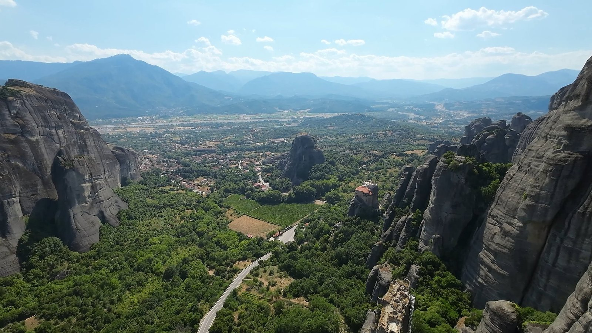
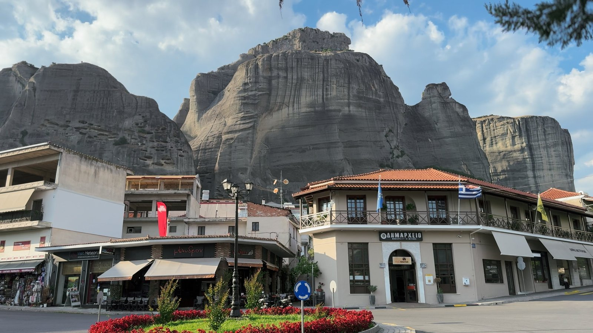
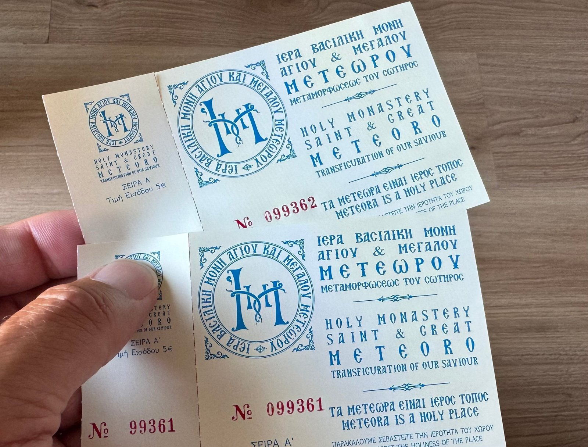
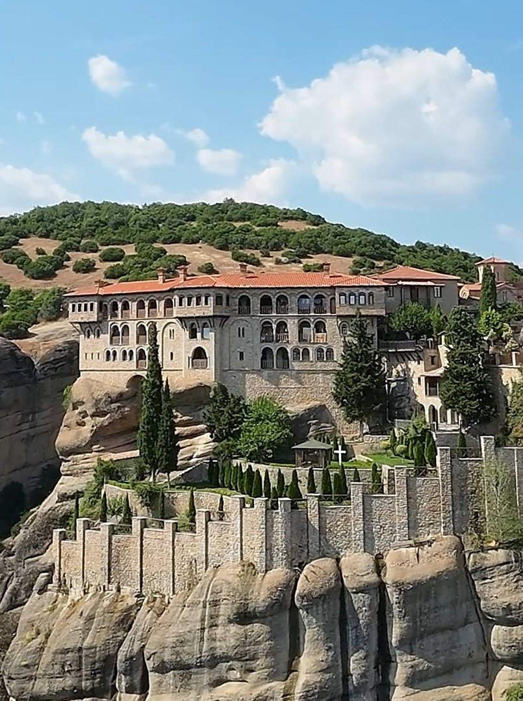
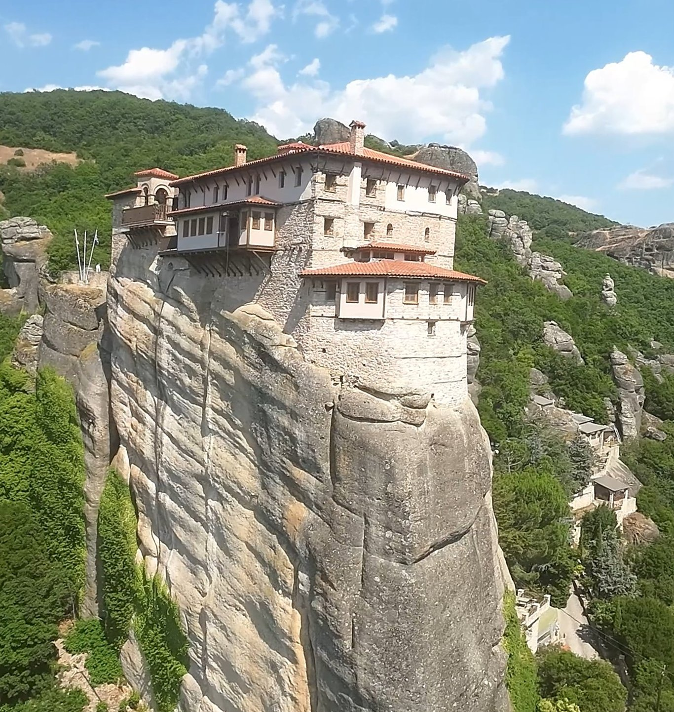
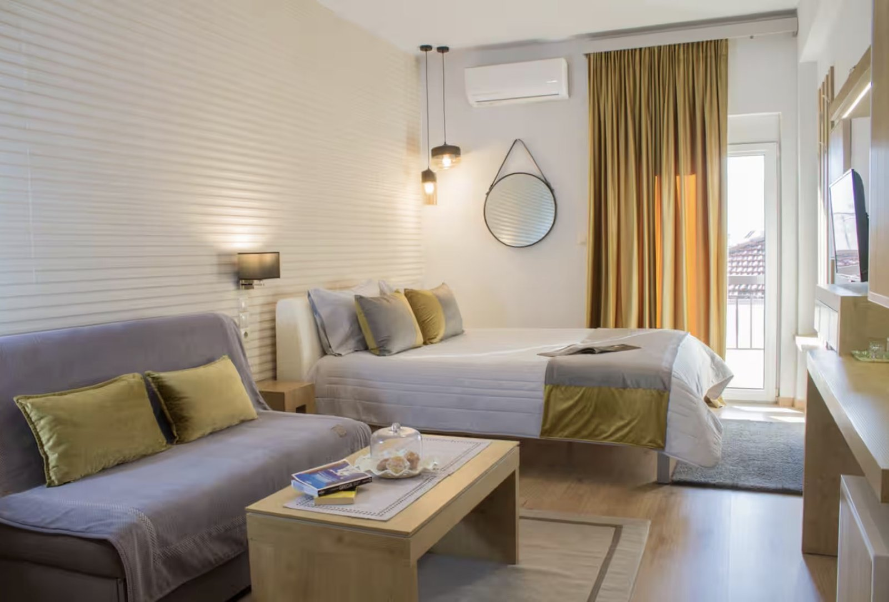
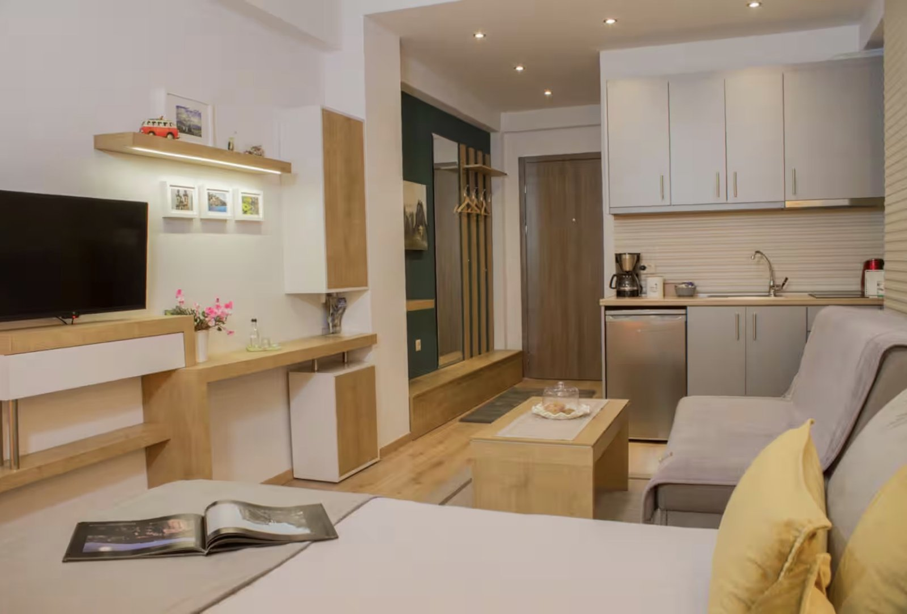

There are places you visit because they're beautiful, places you visit because they're interesting, and then there are places that leave you wondering how on earth they came to exist in the first place. Meteora is firmly in the third category.
We'd seen the photographs, of course. Those extraordinary sandstone pillars with monasteries balanced on top, seemingly defying gravity. But photographs don't prepare you for the real thing. As we drove towards Meteora, the landscape suddenly changed, and there they were: enormous rock formations rising out of the earth, with ancient monasteries perched on their summits.
It was one of those rare travel moments when you stop and say, “Wow.”
METEORA: A LANDSCAPE UNLIKE ANYWHERE ELSE
Located in central Greece, close to the town of Kalabaka, Meteora is one of the country's most extraordinary natural and cultural landmarks. It's also a UNESCO World Heritage Site, and once you've seen it, it's not difficult to understand why.

The name Meteora translates roughly as ‘suspended in the air’, which is about as accurate a description as you could hope for. The enormous sandstone rock pillars have been shaped by millions of years of geological activity, creating a landscape that looks almost impossible. Some rise hundreds of metres above the surrounding countryside, their sheer faces broken by ledges, crevices and patches of vegetation.
And then there are the monasteries.
Originally, 24 monasteries were built on these seemingly inaccessible summits. Today, six remain active and open to visitors. Built by monks seeking solitude and protection from invasion, particularly during the 14th century, they represent an extraordinary achievement of faith, determination and engineering.
Looking up at them, you can't help wondering how anyone managed to build anything up there, let alone transport the materials needed to construct an entire monastery.
OUR VISIT: 46 DEGREES, ENDLESS STEPS AND ONE VERY SMALL LIFT
We drove to Meteora from Nafpaktos, a journey of approximately three and a half hours. Much of the drive was straightforward, with motorway driving for a good proportion of the route.
However, the final stretch was rather more interesting.
The roads became narrower, winding through the mountains with steep drops at the roadside. They're generally wide enough for two cars, but some bends are tight, and this is a main route for lorries travelling from the direction of Igoumenitsa. Nothing quite concentrates the mind like meeting a large articulated lorry coming towards you around a blind bend, particularly when the other option is a rather spectacular drop.
My advice? Keep your eyes on the road and leave the scenery appreciation until you reach somewhere safe to stop. But then you turn a corner, and suddenly Meteora appears.

Honestly, it's breathtaking. All those enormous rock pillars rising out of the landscape, with the monasteries perched impossibly high above you. It's difficult to take it all in, and even harder to capture in a photograph.
Climbing in a heatwave
We visited during a particularly brutal heatwave. The temperature was 46°C, there wasn't a breath of wind, and the sun seemed determined to finish off anyone foolish enough to be walking around outside. Naturally, this was the perfect opportunity to climb towards a monastery.
The paths are cut into the rock and involve plenty of steps. Jacquie made her way upwards at a steady pace, stopping regularly to admire the view. Or at least that's what she claimed. I suspect the real reason was that she was trying not to melt into her sandals.
Meanwhile, I was feeling rather more energetic, enjoying the light and the spectacular surroundings, and had already deployed the drone to capture some cinematic footage of this extraordinary landscape. The resulting footage was rather lovely. Although it did include one rather perspiring British woman clutching a sunhat and a bottle of increasingly tepid water.

Inside the monastery
Inside the monastery, everything changed.
After the relentless heat outside, the thick stone walls offered a welcome coolness. The atmosphere was wonderfully peaceful, with ancient icons lining the walls, candlelight flickering and the scent of beeswax hanging in the air. It felt a million miles away from the busy world below.
We spent some time looking around before finding ourselves drawn towards the views across the valley. There's something about Meteora that makes you want to stop talking and simply take it all in.
It's not just the scenery. It's the thought of the people who lived, worked and worshipped in these extraordinary places, often in almost complete isolation.
The world's least glamorous cable car

And talking of getting things up there, there's another rather extraordinary sight associated with the Great Meteoron Monastery. From one of the roads below, you can see what is described as a cable car, although that perhaps gives it rather too glamorous a title. In reality, it's a small box suspended from a pulley system, travelling across an enormous drop into the abyss. It's used by builders and maintenance staff to transport building materials and supplies up to the monastery.
It's an ingenious bit of engineering, and when you consider the difficulty of getting materials to these remote locations, you can understand why it's there. But would you go in it? Probably not. I think we'll leave that particular mode of transport to the professionals. Jacquie would almost certainly rather tackle the stairs.
Some places insist you slow down. Meteora is definitely one of them.
THE SIX MONASTERIES: WHAT IS THERE TO SEE?
Although there were once 24 monasteries, six remain active today and welcome visitors. Each has its own character, history and opening hours.
- Great Meteoron Monastery: The largest and one of the most historically important, with fascinating religious artefacts, frescoes and a museum.
- Varlaam Monastery: Famous for its impressive position and beautiful interior, with a particularly interesting history.
- Roussanou Monastery: A striking monastery perched on a relatively narrow rock pillar, surrounded by spectacular scenery.
- Holy Trinity Monastery: Perhaps the most dramatically positioned, sitting high above the valley. Its setting is instantly recognisable.
- St Stephen's Monastery: More accessible than some of the others, with beautiful views and a peaceful atmosphere.
- St Nicholas Anapafsas Monastery: A smaller monastery with remarkable frescoes and a particularly interesting position among the rocks.

You could attempt to visit all six in one day, but personally, I wouldn't recommend rushing around just to tick them off a list. Their opening days and hours differ, so planning is essential.
Allow time to enjoy the viewpoints as well. Some of the most spectacular photographs of Meteora are taken from the roadside viewpoints rather than inside the monasteries. And don't forget to look back at the rocks themselves. The scale is extraordinary.
PRACTICAL TIPS FOR VISITING METEORA
How to get there
Meteora is in central Greece, with Kalabaka and nearby Kastraki providing the main bases for visitors. If you're driving, approximate journey times are:
- Athens: 4–5 hours (around 350 km).
- Thessaloniki: 3–3.5 hours (around 230 km).
- Ioannina: approximately 2 hours.
- Nafpaktos: approximately 3.5 hours, as on our road trip.
If you're flying into Greece, Athens and Thessaloniki are the main airport gateways to consider. Hiring a car gives you much more flexibility to explore the monasteries and surrounding countryside. Read our car hire tips before you book.
Where to stay
We stayed in Kalabaka, a traditional Greek town at the foot of the rocks.
Our accommodation was Meteora A, a centrally located apartment that was small and compact but modern, with everything we needed. However, the real selling point was the view. Absolutely jaw-dropping.


There was just one slight problem.
The lift.
It was approximately the size of a small coffin, and, as regular readers will know, Jacquie has absolutely no intention of getting into lifts. So, while I squeezed myself into the tiny contraption, Jacquie tackled the two flights of stairs in 40-degree heat.
Marriage is all about compromise.
Visiting the monasteries
- Entry: Approximately €5 per monastery, payable separately.
- Opening times: Each monastery has different opening hours and closing days, so check before visiting.
- Dress code: Men are expected to wear long trousers. Women should wear skirts or dresses below the knee, with shoulders covered. Some monasteries provide wraparound skirts at the entrance.
- Footwear: Comfortable walking shoes are essential.
- Parking: Generally along the roadside, and you may have a walk to reach the entrances.
- Shade: There is very little, so take water, sunscreen and a hat.
One particular notice outside a monastery made us smile. It stated that “slacks or pantaloons will not be admitted”.
Quite possibly the first time either of us has encountered the word pantaloons outside a period drama.
When is the best time to visit?
Spring (April to June) and autumn (September to November) are generally the most comfortable times, with more pleasant temperatures for walking and exploring. See our guide to when to go.
Early mornings and late afternoons are particularly lovely for photography, when the changing light brings out the colours and textures of the rocks.
OUR VERDICT: IS METEORA WORTH VISITING?
Absolutely. Without question.
Meteora is one of those places that deserves its reputation. The landscape is extraordinary, the monasteries are fascinating, and the whole experience feels quite unlike anywhere else we've visited in Greece.
Would we go back? Probably not. For us, this was a once-in-a-lifetime experience. That first moment when you turn the corner and see those enormous rock formations for the first time is difficult to replicate.
But that doesn't make it any less worthwhile.
If you're travelling around mainland Greece, we'd strongly recommend adding Meteora to your itinerary. Give yourself at least a couple of days if you can, explore the monasteries at your own pace and make time to enjoy the views.
Just perhaps avoid visiting when it's 46 degrees. And if your accommodation has a lift, do check its dimensions before booking.
Some experiences are best left to the imagination.